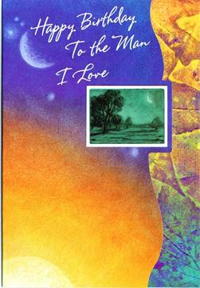
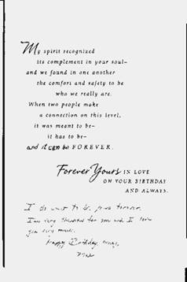
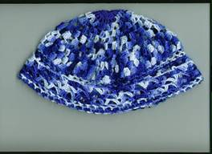

Sunday, February 01, 2004
I woke up at 5:30 AM but let Mae sleep in. I went to what I thought was P. E. C. meeting, in the Guimba 2nd branch. I was confused as to who was there. After returning home I took a 15 minute nap, and then we went back for the block program. I realized that the meeting was Branch Missionary Correlation. We attended the block program and then they held P. E. C. which we also attended. We ate lunch on the way to Tarlac to visit with the Hyers. Elder Hyer had bought me a map and showed me where to go. It was 10:15 PM before we got home. I filled out my journal and we soon went to bed.
Monday, February 02, 2004
We got up at 5:30 AM and went walking at C. L. S. U., which is the first time for some time now. We got home and showered and had breakfast. Mae got on the computer and finished writing the letter to our family. We also had some reports to send into the office. At 10 AM we got on line with Scott and Jeff. We enjoy that, although sometimes it gets a little confusing as to the mixed conversations. Jeff informed us that he was going with Josh and Charlyn to the top of Mt. Timpanogus this coming Saturday. Scott is concerned about that hike this time of year. Mae told Jeff that she was concerned, but that didn’t make much difference. We will just have to keep him in our prayers and hope it goes ok. David later got on line with us. Things seem to be working out for them with the move to Utah. They put their house up for sale and within hours have an offer on it. That is sure different than Jeff and Gail’s sale of their home. I called the Honda dealer and they are not sure if the parts will get here this week or not. They may have to be shipped in from Japan. I called President Clark and told him the problem. This evening President Brimhall called and said, to bringing our car to the mission home and trade President Clark cars, until ours is repaired or replaced. Mae and I worked all afternoon on presentations for this coming Saturday. When President Brimhall called I left the computer to answer the call. I didn’t save my work and the computer shut down while I was gone. I was afraid that I had lost a lot of work, but I was lucky that there had been an automatic save. I was glad to find that out. It was after 10 PM before we got to bed.
Tuesday, February 03, 2004
We didn’t go walking this morning because we invited the Elders to come over for breakfast. Only Elder Clam and Elder Webber came, so we had plenty. We wanted to have Elder Clam because this will be his last time to eat with us, as he is being transferred this time. I think he is ready for the transfer, because he has been here in the San Jose and Guimba Districts for nine months. He has certainly been an obedient and enjoyable Elder to work with, we will miss him. President Clark called and said that he had arranged for us to get a van until our car was repaired. He will have the vehicle pool get the repairs done on our car. I asked concerning the parts that I had put a deposit on and he asked me to check on canceling the order. I called the Honda dealer in Tarlac. They said they didn’t have the parts and was not sure when they would be in. I asked them to then cancel the order and return my deposit. I was told that they couldn’t refund the deposit. I said that the agreement was that they would have the parts with in a week and if that wasn’t possible, they should refund my deposit. Again I was told that they couldn’t refund the deposit. I asked to talk to the manager. I was told that he was out, but would be back in a few minutes. I asked them to have him return my call in fifteen minutes. With in a few minutes I received a text saying that the parts would be in tomorrow. I text back and asked for a time that I could bring the car in and I received a text back saying to be there by 9 AM. I let President Clark know that they will get it repaired for me and that will save the shuffling of vehicles. I worked the rest of the day on my presentation for the Paniqui High Council training on Saturday the 7th. Mae also worked most of the day on her training materials. I did take the car to a tire shop and had them repair the back tire that keeps leaking. After repairing it, he said I should use it as the spare. I think the tires are getting about ready for replacement.
Wednesday, February 04, 2004
We were too tired to get up and go walking this morning. I left at 7:30 AM for Tarlac to get the car repaired. Just as I got to Baloc, I received a text that the Honda dealer was not sure if the parts had come in. I pulled over to read the text and think of what to do, when he text back saying that they were there. I drove on in and got there just after 8:30 AM. They worked all day to get it done, but got me out about 3:30 PM. I studied part of the time, and watched the show “The Patriot” on the TV this afternoon. I guess they had to do some repair to the shock absorber mount also. That was probably damaged when we first got here and we were forced off the road by a truck, I think that is when the problem first started and the trip to Baler just made it worse. It was 5 PM when I got home. I was tired, but Mae wanted to take some sheets to the Book Store to have copied and we went to the grocery store in San Jose for a few items. We worked on our presentations for Saturday, until almost mid-night.
Thursday, February 05, 2004
We were too tired to go walking. We left about 9 AM for Manila, stopping in Angeles for a few minutes, so Sister Clark could get me the reimbursement money on the car repairs. We got to Manila about 3:30 PM, but then we tried to find the Hotel. We got off Ortigas Avenue, but I must have misunderstood the directions of Elder Hyer, and thought we were to go off on Shaw Blvd. We spent the next 3 hours trying to find the Holiday Inn. When we finally found it, we realized that we had passed right in front of the hotel. When we went to check in, they couldn’t find our reservation. They had to put us up in a suite , and thought they gave us a good price (after several minutes of arguing with them) , but it was still very expensive. (About P9000, this is about $180). We went out to eat, and then found a place to get Mae’s watch repaired. We got a little sleep before we met Clem. He took us to the airport at 11:45 PM to pick up the girls. The plane arrived at 11:55 PM, but they were over ½ hour getting off and getting their baggage. We paid Clem P500 for doing it, but it was well worth it.
Friday, February 06, 2004
We didn’t get to bed until after 2 AM. It was so good to see the girls, we just couldn’t quit talking. We got up about 8 AM and went down stairs for breakfast. We really enjoyed just visiting. We went to a session at the Manila Temple, and really enjoyed that. We stopped at the distribution center and got some Hand Book of Instructions for the High Council at Paniqui District’s leadership training I am giving tomorrow. It was 5 PM when we got to the mission home. President Brimhall took the four of us, the Hyer’s, and the Clark’s, to dinner. Sister Brimhall gave Sandi a quilted wall hanging as a gift. It was a very enjoyable evening. We left for home about 8:30 Pm, so it was after 11 PM when we got there. We were again very late getting to bed.
Saturday, February 07, 2004
We had planned on sleeping in for a little while, but I think we were all up by 7 AM. We prepared a nice breakfast, and then I worked on my presentation. I mainly read the instructions on the projector that Sandi had brought me. Time goes so fast and Mae was soon reminding me that we had to leave to get to Paniqui. We got to Paniqui about 12:30 PM. President Nadado met me and we went into his office where he gave me his High Councilor’s assignments. I made some changes to the presentation slides before we went into the training meeting. While the opening of the meeting was taking place, I realized that I had not brought the power cord for my computer. I had used the computer in President Nadado’s office for at least 20 to 25 minutes, so I estimated that would leave me, at most 40 minutes of power left. I didn’t know what else I could do except ask my Father in Heaven for help. When we separated for group instruction, I set up and used the computer as I had planned. I went for well over an hour. It went well and I had the power to keep the computer going as long as I needed it. I think things went fairly well. Just before the meeting, Mae was setting up for her training. She got some brothers to help her, but they couldn’t get the VCR to work. I stopped in mainly to get the car keys, and was able to get it working for her. We both felt good about our training. All the people visited with Sandi and Shellie, continually commenting as to our beautiful daughters. We stopped at Cindy’s and ordered some fried chicken and bought Sandi, Shellie and Mae a Holo Holo, we wanted them to try one while they were here. It was dark by the time we got to Guimba, so we didn’t stop at President Cabuyaban’s. We will have to try another time to take the girls to meet his family ands see his farm. We went to the Lozano family in Munoz and visited there for just a few minutes, then stopped and introduced Sandi and Shellie to Roger and Hyde Silvia & visited a few minutes. We then came home and watched some pictures that Sandi and Shellie had brought. I was able to project some them onto the wall. We also listened to a tape that Chelci had made for us, singing many beautiful songs. It was great. Time just goes too fast, but we sure had a good day.
Sunday, February 08, 2004
I woke up at 4 AM and updated my journal. I finally went back to bed and everyone else started getting up. Mae cooked French toast and eggs for breakfast. We ate a very relaxing breakfast. It seemed like we were busy getting ready to go. We stopped at President Gajonera’s to introduce the girls to them. We then went to Guimba and attended the 2nd Branch meetings. After meetings while Mae & I was attending branch correlation meeting, the girls were outside visiting with the sisters. Many of them wanted to go home with our daughters and be their maids. When we came out we found them playing with many of the children. They were glad we finally came as they said they were getting worn out. We stopped at the home of President and Sister Cabuyaban to introduce the girls to them and also the home of the Doria boys.
Monday, February 09, 2004
Packed for Baler trip and left home about 10 AM. We stopped in San Jose at the bank to get the girls some money changed from dollars to pesos, and then at the palanki for them to experience that. We then went to CVC where Shellie and Mae bought some groceries to take with us. Sandi and I went over to LBC to mail some letters for Sandi. We took the route from San Jose through Rizal, to Pantabangan, to Maria, Aurora and to Baler. We got to Baler about 5PM. After checking in at the Bahia de Baler Garden Hotel, we went for a walk along the beach. We then ate dinner at the adjoining restaurant. We were going to play Rook but Sandi started talking about Terry. I had wanted her to, that we might understand more of what had happened and how things are working out financially for her. I think it helped Sandi to talk to us about what had happened. She is sure young to have to go through such a trial, but she is strong.
Tuesday, February 10, 2004
We got up early so we could be on the beach to see the sun rise. It was a beautiful sun rise. The girls started out just wading in the surf, but soon got wet, so went back to the hotel and changed to swimming suits and went in swimming. They had a lot of fun. We went back to the hotel to eat breakfast on our porch. Elder Stewart and Elder Mortinson came by with two Books of Mormons, that I had requested and also some coconuts for us to try. We enjoyed visiting with them for a few minutes. We went up to some waterfalls that they told us about. The first ones which we went to, we could drive almost to them with just a short easy walk to see them. We wanted to see some larger falls and the people there told us they were a long ways off and a long walk. We continued to look and ask for the “mother falls”. A man had us follow him on his motorcycle and he led us out of the area. When we came to the next road, he waved down a trike driver, who was the brgn. Captain. He had us follow him to the main road and west through San Luis. He showed us a road and told us to follow it to the river. We would have to walk from there. I tried to pay him for helping us, but he wouldn’t accept anything. He did say that his daughter was collecting donations for her school and if we wanted to help her that way he would give it to her. I gave him P20. As we started up the road, a pickup came up behind us. I moved over and let him pass. He motioned for us to follow them. We did and we went right up to the river, where we parked. They were also going up to the falls and invited us to go with them. They were a family from South of Manila and were on vacation there in Baler. We started trying to keep dry as we would have to cross the river several times; however we soon slipped and fell in the water so often, that we gave up trying to stay dry. The one young man with the family really helped us as we hiked up the very difficult trail. Although the trail was hard, the beauty made it worth while. We had to hike 2km to get to the falls. It was beautiful and well worth the effort and time to get there. From there we went to the palanki where we hired two trikes to take us to the swinging bridge. It was a long suspended cable bridge crossing a river that went into the ocean. We next went to a souvenir shop where the girls found several items they wanted to take home to family and friends. We again went out to eat dinner.
Wednesday, February 11, 2004
We again went to the beach this morning, the sky was overcast, but it was a wonderful morning.
We looked for sea shells and coral. We then went back to the motel and ate breakfast, we packed and checked out. As we started out of town, we stopped to buy some ice, as we went to get into the car; I noticed that the back tire was low. We went to a small tire shop and had it repaired. After getting the tire repaired we went to Maria Aurora where we saw the Balete tree (Asia’s largest tree). Shellie climbed up the inside of the tree to the top and stood out where we could see her and take pictures. From there we then went to Berry Phillips place and introduced the girls to he and his family. Mr. Phillips welcomed us and showed us around his place and showed the girls how they made the paper from the banana tree stock. Of course Mae and the girls had to buy some of their product. We were there for 2 or 3 hours. We left for home after 4:30 PM, going back to Baler and over to Bongabon, then to Rizal and San Jose and on home. It was late when we got home but we had to bring things in from the car so we could prepare to leave tomorrow.
Thursday, February 12, 2004
We were a little late getting up this morning, so we didn’t go walking. I think it was this morning that Shellie gave me a hair cut and cut it into a butch cut. It isn’t the way Mae likes it but it’s much easier to take care off. After breakfast I washed the car, while Mae and the girls were busy packing. Sandi came out and gave me a hand with the car. We were just about through when Shellie called for our help. Mae had tripped on the step going from the living room to the hallway. She fell forward; hit her head quite hard on the wall. We helped her up and into the bed room and laid her on the bed. Shellie got ice, put it in a towel and held it on her head. Mae just wanted me to giver her a Priesthood Blessing, which I did and she soon was up to finish preparing for our trip. I am sure a lot of it was that she didn’t want to spoil the trip for the girls. We drove to Baguio getting there about 4:30 PM. On the way I got sleepy, so let Shellie drive for about 20 minutes while I took a short nap. Shellie was glad that she got to drive here in the Philippines, but she was also glad when I woke and could take over. We checked into Camp John Hay hotel, and then went for a walk around the hotel and grounds. It is a beautiful place to stay and we were very happy with our decision to stay there. We drove down town but couldn’t find any parking space for the car, plus I was soon lost. When we did find our way back to the hotel area, we stopped at a drive inn and got dinner. I decided this evening that tomorrow we would leave the car parked and use a taxi to get around town.
Friday, February 13, 2004
After a good night sleep, we checked out of the hotel, putting all of our luggage in the car and leaving it parked at the hotel, I hired a van & driver for P200 per hour to take us around town. First we had him take us to a McDonalds where we ate breakfast. Next we went to Eva Silver Store where the girls enjoyed shopping. We also watched them manufacture the jewelry. Next we went to Easter Weaving store. I quickly looked through the store while the girls got to the first rack. I found a soft couch to set on and laid back and took a nap while Mae and the girls had fun. Our driver then took us to the wood shops, where they carved the items, as he said they were much cheaper from them. Sandi had a ring worked on at the Silver shop, so we had to go back to get it. The driver then took us back to the hotel so we could get our car. I then had him lead us to the S M mall, where we paid the driver for 6 hours time for the driver and van. That was very worth while. We enjoyed the mall and one of the unique things was the construction of the mall. It was four levels but had no roof, only a canvas tent covering and no exterior walls. This was great to over look the city. The city is beautiful and we could see everywhere. We left the mall for home about 4PM. We had to stop at one more souvenir shop on the way out of town. We also stopped at a resort and looked around for a few minutes. It was almost 9PM when we got home and we were very tired but it was a good trip.
February 14, 2004
We slept in until 7AM and ate breakfast about 8 AM. Marlyn came to do some house work that she hadn’t got quite done on Friday. She also did up the dishes before she left. I also found that she had cleaned up my shoes that I had got muddy and wet from our Baler trip. She is special in looking for ways to help us. Marlin Dator came and washed our car. I asked him if he would have time to take Sandi and Shellie for a trike ride. He took them to downtown Munoz to the palanki where they bought two machetes and a few other small items. He also showed them around the area. They really enjoyed the time with him.
We went to a Returned Missionary reunion for Guimba District that was held at the Munoz Chapel. Mae and I both had been asked to speak at it. It also gave Sandi and Shellie a chance to meet many of the members there. Everyone made Sandi and Shellie feel very welcome. From there we took the girls to meet the Umipig’s and President Neito and his family. President Nieto wasn’t there at that time. We came home and ate dinner. As we finished, President Nieto came to visit us, he brought us a valentine cake and apologized for not being there when we had came to his home. He visited for several minutes before leaving. We felt that that was very special of him. Shellie and Sandi gave Mae and I a box of three fresh roses for Valentine Day. Marlin and Imelda also gave us an artificial rose that Mae put in a vase. They had written a sweet message on the Valentine card attached to the rose. I down loaded all the pictures, which we had taken during this week, for the girls to take home on two DVD’s. The girls packed most of their items this morning and only had a few things to get in this evening. We were late getting to bed again, but that’s ok.
Sunday, February 15, 2004
We got up and finished packing the girls things. They really had to work at packing to get all they had bought in their bags. We left at 8:30 AM and stopped in Capas at a World War II shrine honoring those that gave their life’s during the Japanese invasion of the Philippine Islands. We had to ask directions and it was interesting that the ones we asked in a local gas station didn’t know about the shrine. We asked another trike driver and he told us how to get there. I thought it interesting that we often do not know some of the things of interest in our own back yard. As we viewed the shrine, it was incredible the number of Philippines’s and American lives that were lost at the encampment of prisoners, over 55,000 Philippine’s and 5,000 Americans. Our knowledge of what took place at this Prisoner of War camp is mainly because of the books, “Children of the Promise”. We got to Clark shortly after noon. We traded cars with the Clark’s, as vehicles that have plates ending in 1 can not drive in Manila on Mondays and our car had a license plate with #1. We went on to Manila, getting there about 3:30 PM. We didn’t have any trouble finding the hotel this time, and our room was ready for us. We often feel that most days are like Sunday since we have been on our mission, but today didn’t seem like Sunday, as we didn’t get to attend any meetings. We also had to purchase our evening meal at the mall. There was a stand in the Mall that sold frozen yogurt, so I bought one. It had much more sugar in it than what I am used to, and it gave me problems during the night.
Monday, February 16, 2004
We got up at 2:45 AM so we could be ready to meet Clem in the lobby at 4 AM. We hired Clem to again drive us to the airport. We stayed with the girls until they entered the building and then came back to the hotel. We went back to sleep for a while. Before checking out we enjoyed the complimentary breakfast buffet. We got to Clark about 12:15 PM and exchanged some American currency, which Sandi & Shellie had given us in exchange for Filipino pesos. When we got to the mission home to trade our car back, the Clark’s invited us for lunch. We sure enjoyed being with them. President and Sister Brimhall also came before we finished so we visited with them for a few minutes. We left Clark Base about 3:30 PM and got home about 6 PM. I got sleepy so Mae drove part of the way. Marlyn had the house nice and clean when we got there. It has been a wonderful week and we are going to miss those girls very much, but we are tired. Bob sent us two packages. The one was another bucket of whey and the other contained hair spray and corral calcium plus there was a video that had JAG recordings on it. We watched two of the shows before going to bed.
Tuesday, February 17, 2004
We slept in. We worked on getting an e-mail off to our family with some pictures attached. It seems to always take a long time when we get on the internet. We went down town and paid our electric bill, then went to San Jose this afternoon grocery shopping and bought another transformer to replace the one we left at Baguio. I worked on catching my journal up to date. It was sure hard to keep it up while the girls were here.
Wednesday, February 18, 2004
We were again late getting to bed last night, so when the alarm went of a 6 AM, we shut it off and slept in. We had to hurry to be dressed before Marlyn came this morning. Time went by fast this morning and before we knew it Marlyn had dinner ready for us. After lunch we went to San Jose to get some T shirts for Mae to use in her talk which she is to giving on Saturday at the YW New Beginnings program in Paniqui. We also paid our phone bill at the PNB in San Jose as the phone company office is closed in Munoz. We stopped to drop off the T-shirts at President Gazmanas as he will print the words on the T-shirts for Mae. While there I visited with President Gazmana while Mae trained Eliza since she is the YW President in Munoz 2. Eve is a counselor in Munoz 1 YW so she will be training her and the rest of their presidency on the 29th. We came home and listened to the recording of Terry Thomas’s funeral. It was a very good program, but brought some tears. I finished catching my journal up to date, while Mae studied her talk. It was a good thing I had made daily notes, or I would have never been able to have remembered what all we had done this past 10 days. I popped some pop corn to eat while we watched the last JAG show which Bob had recorded for us. We enjoyed relaxing,
Thursday, February 19, 2004
We got up just before 6 this morning. We picked up the Munoz Elders at 9:15 AM and went to Cabanatuan where half of the mission elders gathered to meet with President Dallin H. Oaks of the Quorum of Twelve Apostles and President of the Philippines Area. We first had pictures taken and then ate lunch. The lunch was sweet and sour chicken over rice. They gave me a special dish leaving the sweet & sour sauce off. President & Sister Oaks, President & Sister Brimhall, President & Sister Clark and Mae & I were all served lunch in a separate area where we could visit. It was neat to be with an Apostle to just visit and eat. When we met in the missionary conference, Sister Brimhall spoke first on the Light of Christ, then President Brimhall spoke on Love, Sister Oaks spoke bearing testimony that she know that Jesus is the Christ and that he love each of us. President Oaks then covered several topics and gave great council. From the conference we drove to Paniqui, taking the Munoz Elders as far as Baloc, where they took a jeepnie on to Munoz. At Paniqui we attended a Member & Investigator Fireside with President Oaks being the main speaker. It was well attended with almost half of the congregation coming from the Guimba District. It was a special day to be at the feet of President Oaks. We were going to go out to eat after at Cindi’s, with President and Sister Clark, but they were closed. We stopped at the Total Station and got some refreshments and visited for a few minutes. It was 9:45 PM before we got home.
Friday, February 20, 2004
We attended District Development meeting with the Guimba District this morning. Marlyn had dinner ready for us when we got home. She asked us about some concerns that she has with the Branch President keeping confidentiality of the members and the concerns about the interpretation of the law of tithing. I did call President Clark and visit with him about it. We got on the inter-net and were there for quite a while. Mae did a lot of studding for the talk she has been asked to give tomorrow at the Panique Young Women New Beginnings program. President Gasmenia painted some lettering on tee shirts for Mae, so I went over and got them.
Saturday, February 21, 2004
I had a frustrating dream which woke me in a depressed mode. Mae was concerned about her talk today, so we didn’t have the best morning. We went out to Paniqui where Mae gave her talk and it went well. I set out in the car and did some studying of the Handbook. We came back home and ate lunch. I then went to the Munoz Chapel where I met President Clark and President Mercado and we discussed the Temple Recommend situation, and if I understand what is happening it is being handled right. I stayed for the Mission correlation before coming home. We went out to Paniqui for a special evening called “Couples Night Out”. It was put on by the youth for the couples to have an evening out together. It was a lot of fun and a very enjoyable evening. It was 10:30 PM before we got home.
Sunday, February 22, 2004
We slept in this morning and it seemed good since this is the first morning in a long time that we were able to do so. We didn’t have breakfast until 10:00 a.m., but it was delicious as I made hash browns with bacon in it, scrambled eggs and toast. We worked on church items and got ready to go to Guimba 2nd Branch. When we got almost to the Church, Mae remembered that she had left the meat cooking on the stove and we would be gone for at least 5 hours, so it would be burned. I left after Sacrament Meeting to go home and put it in the fridge. It is a good thing that I did, otherwise we might have had the house on fire. Mae feels there is some progress being made in Primary, but still more progress needs to be made. We wish we had another month instead of only one more week with this branch. They still need lots of help. We stayed for their PEC which didn’t start until about 5:00 p.m. as the Branch Presidency had to help with tithing first. The Elders texted us wanting to know what time they should come over for dinner. We told them we were just leaving the Church, so it would be about 7:00 p.m. They texted us back asking if we could pick them up at President Neito’s as they were in a PEC meeting with them. We did and it was 7:45 before we ate dinner. The Elders visited until 9:15 when they had to leave as they have to be in their home by 9:30 p.m. I called President Brimhall about a concern which was made to me in PEC meeting. Goodnight.
Monday, February 23, 2004
I think that I must have turned the alarm off and didn’t realize it, so we slept in until about 6:30 AM. That made it to late to go walking. Marlyn came at 8 AM and Marlin came shortly after that to wash the car. We did some planning and then studied the scriptures for a while. We had some new thought as we read Section 138, of the Doctrine and Covenants. That took us a lot longer as we discussed it and cross referenced it. We got on the instance messaging with Mike, Scott and Jeff. When Jeff gets on Gale is usually there with him. We sure enjoy that hour with the children. Mae then worked on the Family Letter, while I took a short nap. After lunch we kept busy on the computer with various projects. Our landlord came over and we signed the rental contract for the coming year. He is going to come Friday to do some work on the bathroom trying to stop the leak in the wall which leaves a poodle of water on the floor. Roger Silvia came over at 5 PM and talked to us about finances and their temple wedding. As we visited the thought came to me, that we might take his computer on consignment until he could buy it back from us. As I thought about it, Mae made the same suggestion to him, then turning to me and asking if it would be alright to do that. We felt the Lord had prompted us to do that to help them. We will give them P1,000 for a wedding gift (transportation to the temple in Manila for his family) and P3,000 for his computer. He will bring the computer to our house that we might use it. Any time he can repay the P3,000 and it can be in payments, then we will return the computer to him. Next we had a problem of getting Roger and Heideilyn to President Brimhall to get their temple recommends signed. I called and talked to President Brimhall and he scheduled Thursday 26th for them to meet him at the Tarlac Stake Center at 2:30 PM. Later I looked at the calendar and the schedule didn’t seem right, so while I was talking to President Clark, on other matters, I asked about the Thursday schedule. He said I had better recheck with President Brimhall. When I did the day was changed to Friday. I had to call Roger to let him know. We just hope things will work out for them. We plan to attend the Temple with them, but we will drive our own car. I visited Elder Elison as to Friday and found that they will not be having District Development meeting on Friday. That will leave us free Friday morning. We will go out to Panique at 3:30 PM to train the District Clerk. I called Elder Gardner and visited with him about visiting with President Dela Cruz concerning releasing Roberto Sargan as 1st counselor and putting him in as Young Men President, and then calling a new counselor. I asked elder Gardner to pray about it tonight and then to call me back. I think it would be a good change for the Branch.
Tuesday, February 24, 2004
We went walking at the college this morning. After breakfast, studying our scriptures, etc., Mae and I worked on finding pictures for our presentations and scanning them into the computer. I then finished them up in adobe Photo Shop. After lunch, we went to the bank, then grocery shopping at CVC and then to Roger & Heidi Silvia’s where we are buying their computer on consignment so they can have the money to catch up their tithing for last year and be able to get a temple recommend. They are very thankful we could help them, and we are thankful to the Lord as both Mae and I received the same inspiration last night to take their computer on consignment as they are planning to get married in the temple on Saturday. Roger is in Manila today to interview for some jobs and then he will go to the temple to make arrangements for their wedding on Saturday. We came home, put the groceries away and then took brownies and a “thank you” card to President Gasmena and his family as President Gasmena had printed words on 3 t-shirts for Mae to use as visual aids for her talk last Saturday at the New Beginnings program in Paniqui. We came home, had supper and I read in the Handbook of Instructions for Bishop/Branch President’s interviews while Mae worked on Primary work on the computer. We also put on the CD which Scott had sent to us of their family. Goodnight.
Wednesday, February 25, 2004
We were a little late getting up but went walking anyway. We took our showers and finished just about the time Marlyn came. After eating breakfast and reading our scriptures, we set up Roger’s computer for us to use. It makes it nice to have two computers, so we can both be working on the computers at the same time. I got a good start on my interview presentation. We went out to Guimba 2nd Branch, leaving here at 3:00 p.m., to see the mid-week activity, which was to start at 4:00 p.m. It was an “Sports Fest” for the YM, YW and the Primary. The Primary President, Sister Delia, her husband and 4 children arrived at 4:00p.m. Shana, the YW President and her boyfriend, Bong, arrived shortly after, but were not prepared with the items needed for the activity, so they left to go get them. Sister Delia and Mae visited about Primary and then had a good visit about family life, etc. I visited with Roberto and others. Brother Delia drew pictures on the blackboard with his children, keeping them entertained for a while. The branch clerk was in his office watching the movie “The Other Side of Heaven” which he thought the YM & YW were watching for the activity that night. Sister Delia had told Mae that her husband had given the children chores to do and said after that, they would go to the branch activity. The children were excited and had worked hard so they could go. Mae was concerned since they had already been there for an hour and no one was there to start the activity. Other youth and children were coming by now, so she asked the branch clerk to bring the TV/VCR out to the cultural hall and start the movie, which he did. About 45 minutes later, Shana and Bong returned with the items and equipment for the sports fest and they got that going. Wow, we sure wish we would break the Filipino members of starting their meetings and activities late. This is so unfair for the members who come on time. We always stress to start and end on time – that this is Gospel Culture and they need to change from Filipino culture to gospel culture.
We also came for the Baptismal of the Fernandoz family. Brother and Sister Fernandoz had to be married, (they have been in common law marriage for thirteen years). President Cabuyaban performed the marriage, and then Brother Fernandoz had to be ordained to the Aaronic Priesthood to the office of Priest, and then he baptized his wife, his son and one of his daughters. The youngest daughter is only three years old. We went over to their home afterwards for a small wedding reception. It was quite a walk, from where we had to park the car. We walked on just a trail through several different yards. There was no light, so the Elders led the way. They stopped to hold up the wires for us, so we wouldn’t run into them in the dark and get hurt. They had to show us where there were boards to cross some ditches, and other ditches which we had to step across, and low handing roofs which we had to duck under. One place we had to step over a fence and at the same time, watch out for a low hanging branch. One of the Elders mentioned that we were on an obstacle course. On the way back, we had an older lady follow us with a flashlight so that gave us some help. It’s a good thing because the Elders didn’t wait for us on the way back and we might have had problems. They are used to that path as they go to these homes quite often. It was very interesting. There We then went with Elder Gardner and his companion to President Dela Cruz’s and visited with him about making some changes to the Branch Presidency and Putting Roboto in as Young Men’s President. Mae visited with Sister Dela Cruz and the children and I wondered how she would do since Sister Dela Cruz speaks very little English and mainly speaks in Ilicano which doesn’t resemble Tagalog. Mae said it turned out better than she anticipated also. I guess the two of them spoke the language of Love, as we do love these people. It was some walk to get to the car, but President Dela Cruz walked out to the car with us. It is one of the customs of these wonderful people to do that. Mae had packed us a lunch, but we hadn’t had time to eat it until we were on our way home. Mae had eaten some cake at the reception, but I couldn’t have any. It was 10:30 PM before we got home. I filled out my journal and we went to bed. I had to sleep part of the night in the chair since I had eaten so late.
Thursday, February 26, 2004
We got up and went walking at the collage this morning. After showering and eating breakfast, we read in the scriptures for a while. We worked on presentations most of the day. Mae worked on a presentation to teach the importance of financial planning and budgeting. I continued to work on a presentation for bishops and branch presidents about interviews. I did take time to visit with Brother and Sister Umipig and asked them to attend a meeting with Elder and Sister Swenson, Brother Garcia, Mae & I and the staff of the Guimba District Hospital. I also went down to visit Roger Silvia, but he wasn’t home. Heidi said he got a job and was in Cabanatuan getting some tests. He called me later and all is well. He also helped me with a computer problem. It was late before we got to bed.
Friday, February 27, 2004
 
Today being my 65th Birthday Anniversary, Mae gave me this card, which expresses our feelings and goals. I added the “and it can be”, as that is the knowledge the Gospel gives to us. Marlyn also brought me a crochet cap, which she made. She is special and so thoughtful. Marlyn saw the calendar that we have on our refrigerator and saw that my birthday was today.

We left just before noon and went to Guimba to visit with President Cabuyaban. Mae made a large chicken casserole to take out for lunch with them. We enjoyed eating and visiting during our lunch. I then had him show me his farm crop. The insects have truly destroyed that crop. He has a good plan, but the problem is capital to do it with. Am not sure if I can do any thing about it, but we went over the expenses and figured a probable return on the investment. I think it look very good. We will see what can be done. From there we went to Paniqui and met with President Nadado and his clerk. I sowed the clerk how to update the Branch Organizational reports, and got them transferred to him. Elder Elison and Elder Lopez came and helped also. Before coming home we went out to eat at Cindi’s for my Birthday. Mae made a lunch for tomorrow, before we went to bed. Elder Weber and Elder (he looks like Brady) stopped by to bring us a letter and the branch organizational reports from the Guimba District.
Saturday, February 28, 2004
We got up at 3:30 AM and had planned on leaving for Manila at 4:30, but didn’t make it until 5 AM. The traffic was light at that time of the day so we made good time. After getting on the freeway we stopped at a Jollibees and got some breakfast. We had a little trouble, in Manila, getting turned around and finding the right road to the Temple, but got there at 9 AM. We were early so that gave us time to go to the Distribution Center for some items we wanted. When we got back to the Temple at 9:45, Roger and his family were there and looking for us. We had a wonderful session, after going into the Sealing room and witnessing Roger and Heidi being sealed to each other and then their children, Darrin and Karen being sealed to them. What a thrill and a blessing. Mae had made a nice lunch that we ate in the pavilion in back of the Temple. We took some pictures before leaving them and returning home. I felt bad that we couldn’t help them more with transportation, for they had to use the bus system. I got to tired to drive so we stopped in Tarlac and took a ½ hour nap. We got home at 9 PM very tired. I didn’t feel the best so slept propped up on pillows most of the night and then in the chair the rest of the night.
Sunday, February 29, 2004
Because I didn’t sleep to well last night Mae let me sleep in. We attended meetings at Guimba 2nd Branch again today. I had to write a note to remind the Branch Presidency to Present for a sustaining vote, the ordination of Brother Fernandoz to the Aaronic Priesthood to the office of Priest. I went into Primary with Mae and realized the great need this people have to be taught leadership. I visited with the Elders about the Guimba area map, so that I might make recommendations as to the possibility of making a couple of Basic Units. I also visited with Brother Sargon about the changes that I had suggested having him released from the Branch Presidency and called to be the Young Men’s President. When we went to leave the church, the roads were blocked by a parade. We got back to Munoz in time for Mae to teach some leadership to the Young Women’s presidency in the Munoz branches. When we got home Mae was tired, so I prepared some super for us. We got on the e-mail for a few minutes getting some letters from Sandi and Mike. We also got a e-mail from President Brimhall with a copy of Sandi’s letter to him. Mike attached some pictures with his letter. They are special, but they sure made me homesick for my family. I called and visited with President Clark concerning some problems, and then called President Brimhall about the problems of President Cabuyaban. He felt my solution sounded ok, he feels that I will be teaching President Cabuyaban more about farming and how to keep records. He also thinks I should encourage him to teach others once he has learned.